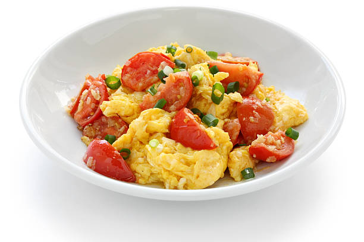
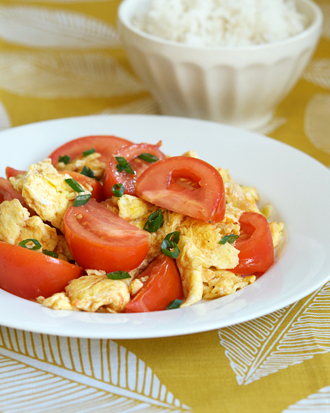

Recipes
(1) Spicy Fried Chicken Sandwich Recipe
Dish: Spicy Chicken Sandwich
Origin: American
Source: Original recipe!
Category: Main Dish

Recipe Ingredients:
- Chicken Prep:
- 1.5lb chicken thigh
- 2 tbsp garlic powder
- 2 tbsp smoked paprika
- 1 tbsp cumin
- 1 tbsp black pepper
- dash/pinch of salt
- 3 cups of flour
- 3 tbsp oil
- 1 tbsp hot sauce
- Marinade
- 1 cup preferred hot sauce
- 2 eggs
- 1 tsp black pepper
- dash salt
- 4 tbsp melted butter
- Bun/toppings
- 4 hamburger buns
- crinkled pickles
- tomatoes
- lettuce
- Chipotle Mayo
Recipe Steps:
- Wash your chicken and leave it to rest in a bowl
- Begin working on your marinade. In a medium/large bowl, combine your hot sauce, eggs, black pepper, butter, and salt one-by-one. Mix until fully dissolved
- In a separate bowl, combine flour, garlic powder, paprika, cumin, black pepper, salt together. Whisk thoroughly.
- Prep your chicken thigh by poking holes with a fork across its surface on both sides. Place your chicken into the marinade mix and let rest for 1-2h. (if speed is needed, can do a quick soak of 10-15min)
- Place your marinated chicken into flour mixture and toss. Place back in marinade and redcoat. Repeat 2-3 times.
- Prepare your vegetables and set them aside.
- Grab a deep pan and add your oil on medium-high heat. Fry in oil for 4-5min on each side.
- Remove chicken thigh and toss in 1tbsp hot sauce before plating.
- Combine the buns, toppings, and chicken and serve!
Additional Food Images


(2) Tomato and Eggs
Origin: China
Source: Own Recipe
Category: Main Dish

Recipe Ingredients:
- Tomatoes
- Eggs
- Salt
- Sugar
- Cooking Oil
Recipe Steps:
- Crack eggs into a bowl and mix until scrambled.
- Cut tomatoes into pieces around the size of your thumb.
- Oil a hot pan and cook the eggs until satisfied then remove the eggs.
- Re-oil the pan and cook the tomatoes until they loosen.
- Combine eggs and tomatoes and season with salt and sugar.
Additional Food images
 
(3) Shrimp Scampi
Origin: Italy
Source: New York Times
Category: Main Dish

Recipe Ingredients:
- 2 tablespoons of butter
- 2 tablespoons of extra virgin olive oil
- 4 garlic cloves, minced
- ½ cup dry white wine or broth
- ¾ teaspoon kosher salt, or to taste
- ⅛ teaspoon crushed red pepper flakes, or to taste
- Freshly ground black pepper
- 1¾ pounds large or extra-large shrimp, shelled
- ⅓ cup chopped parsley
- Freshly squeezed juice of half a lemon/li>
- Cooked pasta or crusty bread
Recipe Steps:
- In a large skillet, melt butter with olive oil.
- Add garlic and sauté until fragrant, about 1 minute.
- Add wine or broth, salt, red pepper flakes and plenty of black pepper and bring to a simmer.
- Let the wine reduce by half, about 2 minutes.
- Add shrimp and sauté until they just turn pink, 2 to 4 minutes depending upon their size.
- Stir in the parsley and lemon juice and serve over pasta or accompanied by crusty bread.
Additional Food images